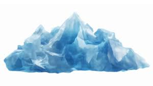
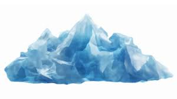

Welcome! This site is dedicated to sharing the urgent reality of global warming and inspiring action. Below you’ll find sections that break down the science, the impact, and what every one of us can do.

 

What Causes Global Warming?
Human activities like burning fossil fuels, deforestation, and industrial agriculture have significantly increased greenhouse gas emissions.
Since the Industrial Revolution, CO₂ levels have soared from ~280 ppm to over 420 ppm today, trapping heat in our atmosphere.
Other gases like methane (from livestock and landfills) and nitrous oxide also play big roles.
Real-World Impacts
Rising temperatures lead to stronger hurricanes, more frequent wildfires, and longer droughts.
Sea levels are rising, putting low-lying cities at risk of flooding—even sinking entirely.
Wildlife and coral reefs suffer habitat loss. For example, polar bears are losing their hunting grounds, and coral bleaching is devastating reef ecosystems.
Global & Local Solutions
Electric vehicles and renewable energy are cutting CO₂ emissions.
Reforestation and sustainable agriculture help absorb carbon and restore ecosystems.
Government policies like carbon pricing and stricter emission laws drive large-scale change.
What You Can Do Today
- Use LED bulbs and energy-efficient appliances.
- Walk, bike, carpool, or use public transit whenever possible.
- Eat less meat—plant-based diets have a smaller carbon footprint.
- Recycle, reduce, and reuse.
- Support climate-friendly policies and vote accordingly.
Take Action
Feeling inspired? Join youth groups like Fridays For Future or 350.org.
Join G.W.P. Mailing ListFrequently Asked Questions
What is global warming?
Global warming is the long-term heating of Earth’s climate due to human-induced greenhouse gases.
How do I become a member of G.W.P.?
G.W.P. isn't an official organization — yet. It’s a grassroots effort by passionate individuals (like me!) who care deeply about the planet. Help spread the word!
How can I help?
Reduce energy usage, recycle, take public transport, eat sustainably, vote for climate-conscious leaders, and educate others.
What does G.W.P. do?
Sadly, the G.W.P. isnt an official organization yet due to the fact that the founder of this organization and coder of this website (me) is not an adult yet.